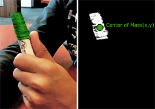

Kamera kontrollü bayrak yakalama oyunu
August 11, 2011Polonya'daki stajımın son haftasında bilim günü isimli etkinlikte küçük çocuklar için sergilenmek üzere kamera kontrollü küçük bir oyun geliştirdim. Oyunu kullanıcı etkileşimi ve oyun mantığı olmak üzere iki bölümde inceleyebiliriz.
Kullanıcı Etkileşimi
Oyun kontrolünün farklı renklerde başlıklar giyen oyuncuların kuş bakışı bir kameradan alınan görüntüleri aracılığıyla sağlanması amaçlanmaktadır. Ancak test aşamasında kullanım kolaylığı nedeniyle normal kamera ve kullanıcıları temsilen renkli işaretçiler kullanılmıştır.

Her kullanıcı için bir renk aralığı tanımlanmakta ve bu aralığa göre eşikleme uygulanmaktadır. Elde edilen görüntünün ağırlık merkezi bulunarak kullanıcının konumu belirlenmektedir. Ağırlık merkezinin x ve y koordinat değerleri görüntü momentleri kullanılarak bulunabilir. Aşağıdaki formülde I(x,y) görüntünün (x,y) koordinatlarına karşılık gelen piksel değerini ifade etmektedir.
Position(x) = M10/M00 Position(y) = M01/M00
Oyun Mantığı
Oyunda kullanıcılar, oyun nesneleri ve bunların ilişkileri aşağıdaki oyun kuralları çerçevesinde tasarlanmıştır:
- Her oyuncu yalnızca kendi rengindeki bayrakları alabilir ve her bayrak için bir puan değeri oyun başlangıcında tanımlanabilmektedir.
- Bomba ikonu bütün kullanıcılar tarafından alınabilmektedir ve alınması durumunda bütün diğer oyuncular kurulum sırasında tanımlanmış değer kadar puan kaybetmektedirler.
- Her nesne için belirli bir zaman aşımı bulunmaktadır ve hiçbir oyuncu tarafından yakalanmayan nesneler tanımlanan süre sonunda kaybolmaktadır.
Bu arada telif hakları problem olmasın diye oyun grafiklerini de kendim tasarladım. :)
Görüntü işleme, Bilgisayarla görü, Programlama, Staj